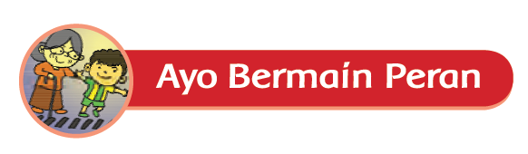
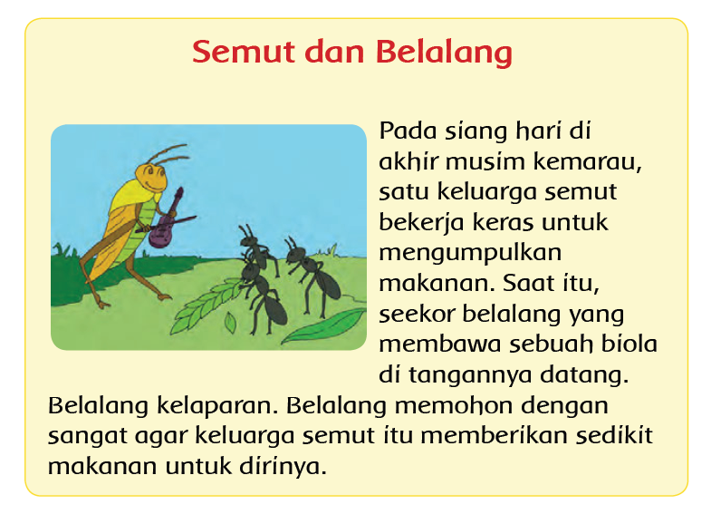
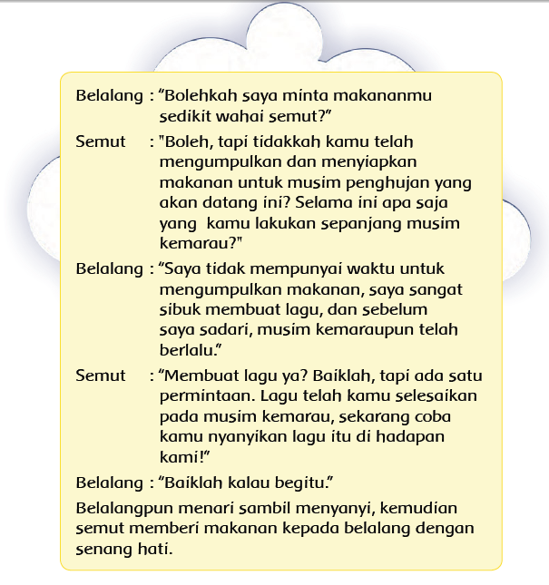

Home
Ayo Bermain peran
Activity
Semut adalah hewan yang mampu menjalin kerjasama dengan berbagai kalangan. Semut bekerja dengan tekun dan sungguh-sungguh untuk mencapai hasil yang maksimal. Sikap itu pantas ditiru. Selain itu, semut adalah hewan yang mampu berkomunikasi dengan baik sehingga tidak menimbulkan kesalahpahaman.


